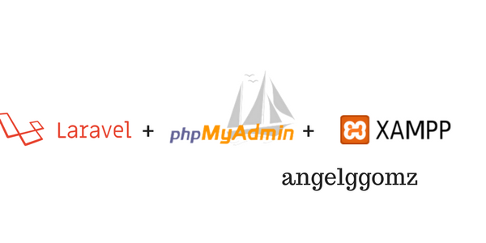

El backend son todos los códigos ocultos que sirven para que una página web o
aplicación funcione correctamente. Además, de su estructura y organización depende
la experiencia de usuario. De igual forma, el backend se encarga de optimizar otros elementos y
recursos como la seguridad y privacidad en un sitio web o aplicación.
Elementos del backend
El backend se constituye por lenguajes de programación como PHP, Python y C++ y frameworks.
Los servidores controlan cómo los usuarios acceden a los archivos.
Las bases de datos son colecciones de datos organizadas y estructuradas.
La seguridad es uno de los elementos más importantes dentro de un sitio web, pues garantiza
que los visitantes y su información estén seguros. Esto también incluye evitar, en lo posible, ciberataques.
Las tecnologías back-end con las que se desarrollan sistemas son:
Lenguajes de programación web interpretados de lado del servidor.
Frameworks (marcos de trabajo) elaborados en base a un lenguaje de programación.
Bases de datos.
Servidores HTTP.

Ejemplos de aplicación del backend
Algunos ejemplos para terminar de comprender el término son los siguientes:
Inicio de sesión._ Cuando una persona accede a un sitio web o aplicación utiliza un correo electrónico y contraseña,
esta información es validada y resguardada por el servidor, que consulta su base de datos y así identifica y
permite el acceso al usuario.
Carrito de compras._ Este elemento permite la compra de productos en línea y sirve para facilitar la selección
de diferentes productos o servicios que algún usuario desee comprar.
Cookies._ Muchos sitios utilizan cookies para realizar un seguimiento de aquello que los usuarios vieron anteriormente,
lo que les permite sugerir otros contenidos (o productos) de interés.
CMS._ Un sistema de gestión de contenidos permite al propietario de un sitio web actualizar la información
sin tener que modificar el código HTML.
Formularios de contacto._ Si un visitante del sitio web se interesa por recibir más información o ponerse en contacto,
se debe contar con un elemento que sea capaz de vincular al usuario con la empresa.